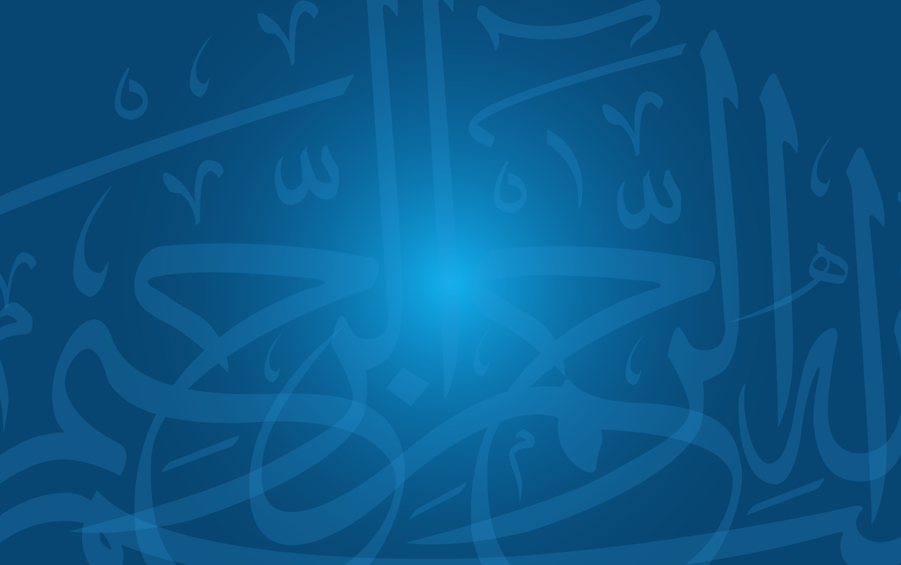
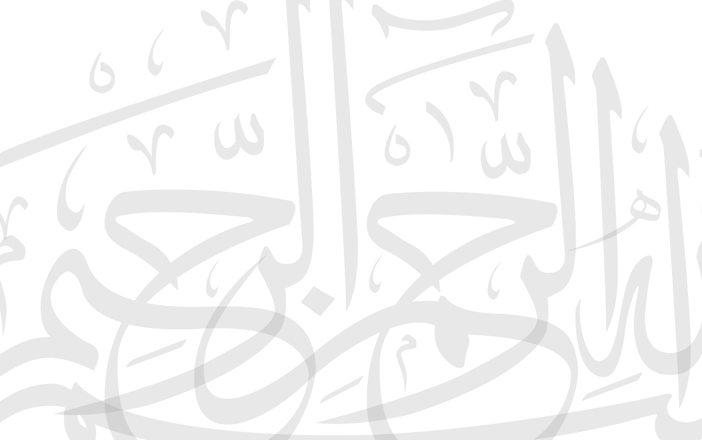
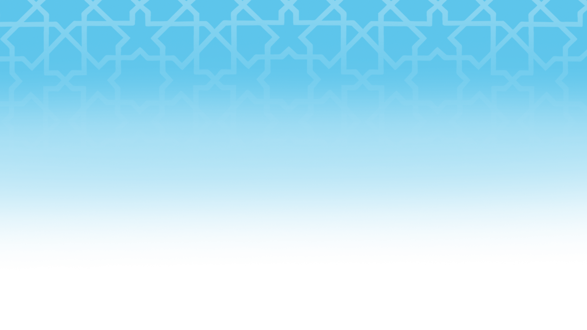
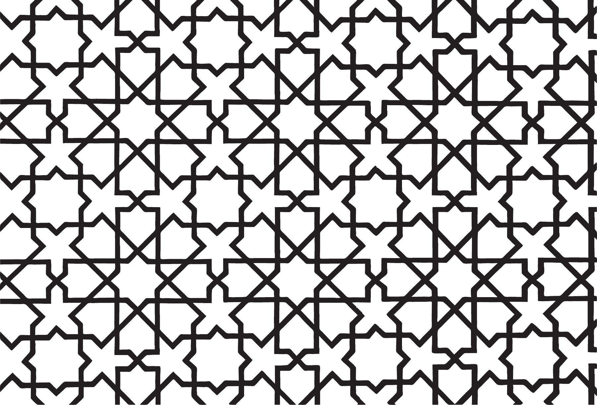
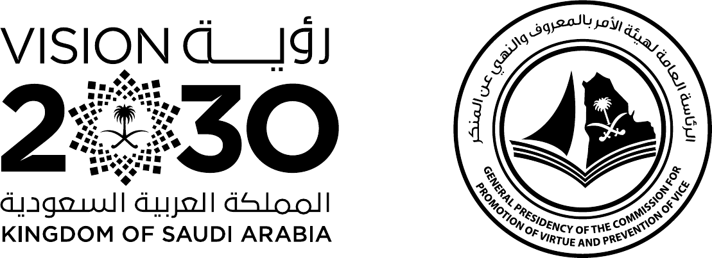
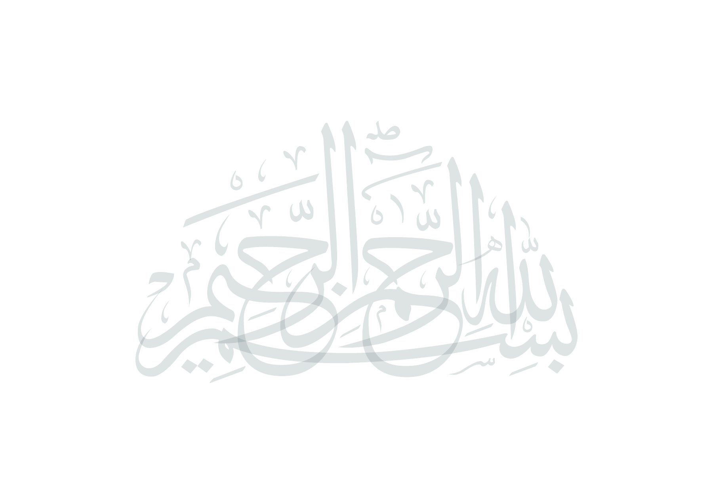
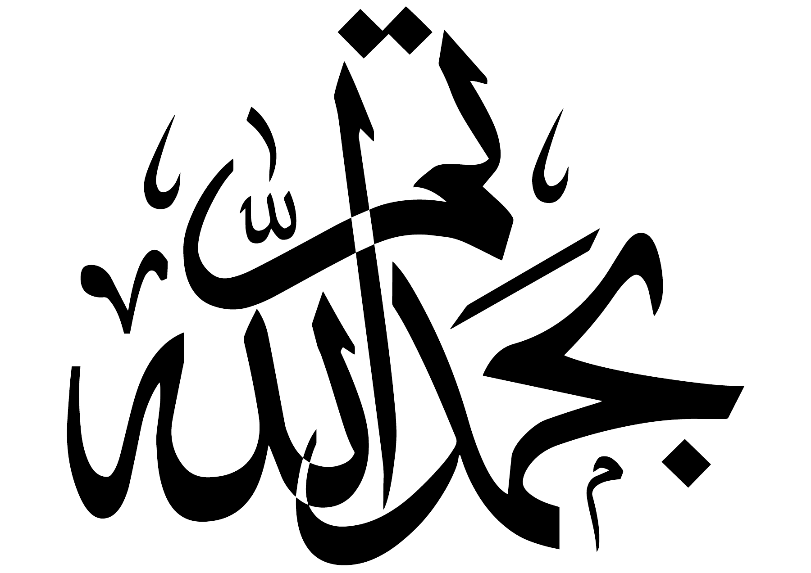
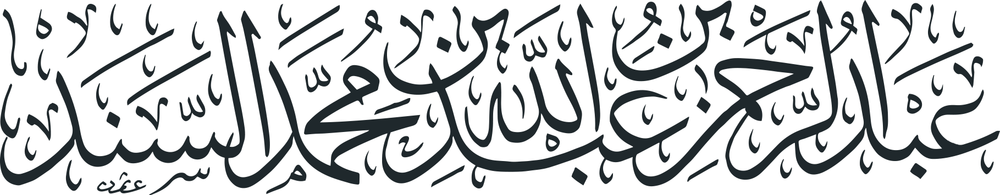
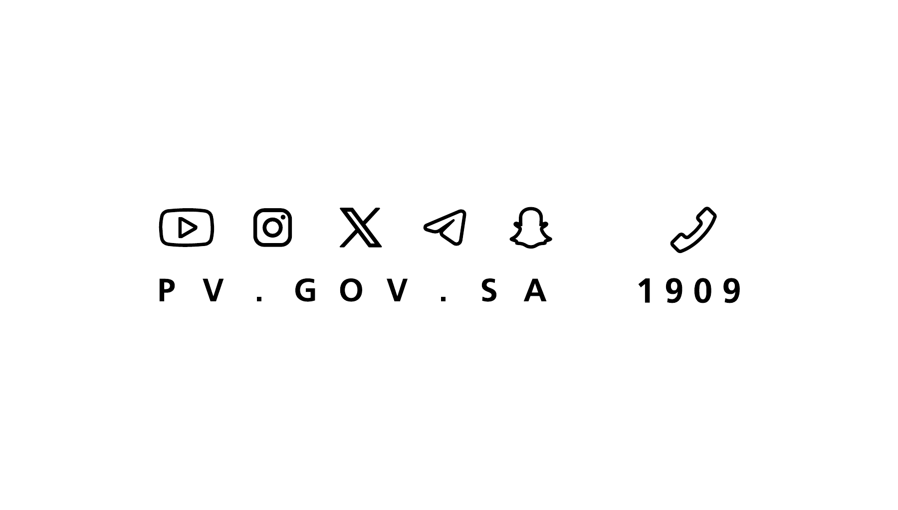
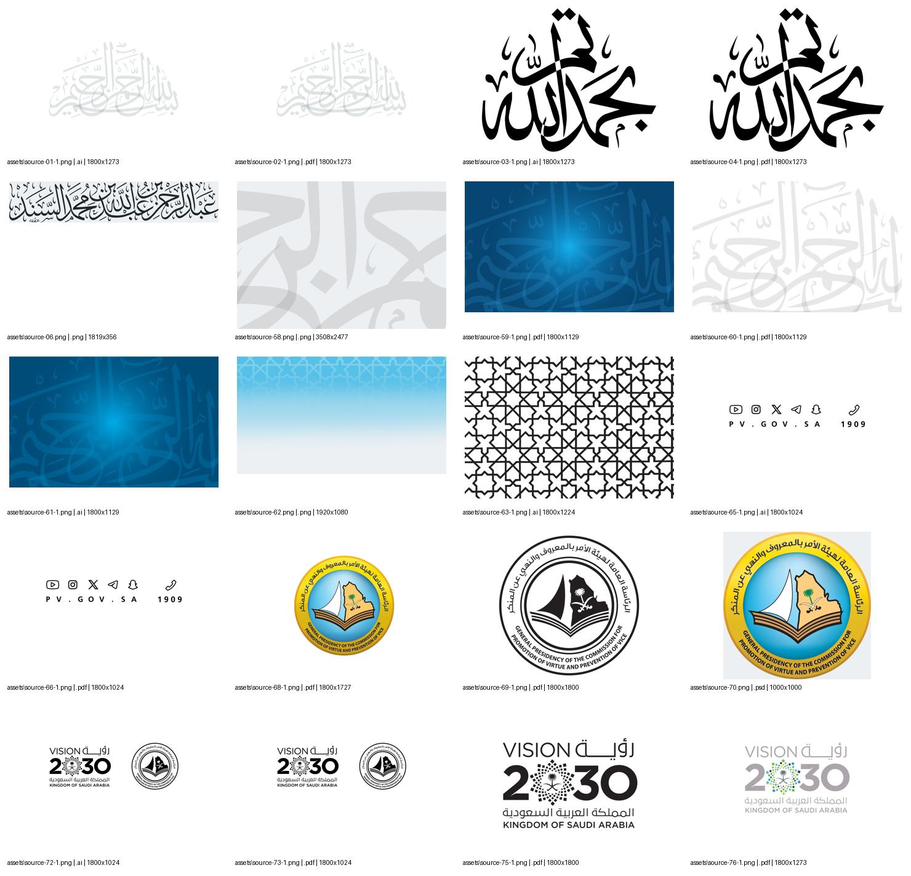

What they supplied in الهوية مباشرة
This is a production asset pack for the General Presidency of the Commission for the Promotion of Virtue and the Prevention of Vice, الرئاسة العامة لهيئة الأمر بالمعروف والنهي عن المنكر. It gives us the institution's emblem, typography, backgrounds, decorative artwork, and related official marks. It does not contain a written website specification or a new competition-specific identity.
I inspected all 66 files, rendered all ten PDF pages and the embedded PDF artwork in all six Illustrator files, viewed the three PNGs and the Photoshop composite, and checked the names of the supplied TrueType fonts. The original folder and application source are unchanged.
Reviewed 1 October 2026. Original size: 18,011,121 bytes, approximately 18 MB. Several Arabic filenames are already garbled in the supplied directory. The inventory preserves their exact names; the descriptions below identify assets from their visible contents.
The eight groups of assets
| Group | Files | What it contains and how we would use it |
|---|---|---|
| Calligraphy, مخطوطات | 2 AI + 2 PDF | A light-gray بسم الله الرحمن الرحيم composition and a black تم بحمد الله composition. These are fixed calligraphic drawings, suitable for document openings and closings. They are not fonts or competition wordmarks. |
| President's name calligraphy | 1 PNG | A transparent, horizontal calligraphic name graphic for Abdulrahman bin Abdullah Al-Sanad. Source dimensions: 1819 × 356 pixels. Useful for a foreword, attribution, or official message; it is a name graphic, not a handwritten signature for signing documents. |
| Fonts, الخطوط المعتمدة | 4 TTF + 42 OTF | Frutiger LT Arabic Light, Roman, and Bold; Al Mohanad Bold; and a larger GE font collection. The Frutiger files are grouped in the approved-fonts subfolder. This is the strongest available indication of the intended everyday website font. |
| Backgrounds, الأرضيات | 2 AI + 2 PDF + 2 PNG | A deep-blue background with enlarged Arabic calligraphy and a cyan glow; a white version with pale-gray calligraphy; a geometric pattern master; a transparent gray calligraphic texture; and a 1920 × 1080 cyan geometric backdrop. These are alternative treatments, not six required website sections. |
| Social and contact artwork | 1 AI + 1 PDF | A fixed contact strip with YouTube, Instagram, X, Telegram, Snapchat, and telephone symbols, plus PV.GOV.SA and 1909. These belong to the institution's artwork. The pack does not identify competition-specific social account URLs or a competition support number. |
| Official institution logo | 2 PDF + 1 PSD | A full-color round emblem, a black-and-white version, and a Photoshop source. The colored mark has a yellow outer ring, blue field, open book, Saudi map, and palm/swords symbolism, with Arabic and English institution names around the circle. |
| Institution + Vision 2030 lockup | 1 AI + 1 PDF | A prearranged horizontal pairing of the monochrome institutional emblem and the Vision 2030 logo. It supplies an existing composition when the marks need to appear together. |
| Vision 2030 logo | 2 PDF | Standalone black and colored versions of the Saudi Vision 2030 mark, with Arabic and English supporting text. The colored version uses gray lettering and a multicolored central motif. |
The format totals are 10 PDF, 6 Illustrator AI, 3 PNG, 1 Photoshop PSD, 4 TrueType TTF, and 42 OpenType OTF. All ten PDFs are single-page artwork. They provide rendered designs, not paragraphs of written branding instructions.
AI and PSD files are authoring sources. PDF files are reference or print artwork, and PNG files are ready-to-use raster images. The preview uses local PNG exports and the provided TrueType fonts, so it opens directly without a development server.
The visual direction
The main direction is blue and white, with cyan accents. The large calligraphic forms carry most of the visual identity. The geometric pattern offers another treatment for decorative bands and backgrounds. The official emblem introduces yellow, green, and black, but those colors belong to the emblem rather than a supplied website color specification.
#074572#0F5889#00A4E0#FFFFFFThese RGB values were sampled from the rendered artwork. They are useful preview values, not officially supplied HEX, Pantone, or CMYK standards. No palette sheet was present.
For our website, that means a blue opening section with white text, white content sections, blue navigation and buttons, and restrained use of the large calligraphic background. It changes the dominant visual language of our existing green-and-ivory site while allowing us to retain its Arabic content, book image, and section sequence.
What the fonts tell us
FrutigerLTArabic-45Light.ttfis the Light weight. It can support lighter introductory or secondary text.FrutigerLTArabic-55Roman.ttfis the regular Roman weight. It is the natural choice for body copy, navigation, and form labels.FrutigerLTArabic-65Bold.ttfis the Bold weight. It can cover headings, primary actions, and emphasis.ae_AlMohanad_bold.ttfis another supplied Arabic font. The font metadata names itae_AlMohanad Boldwith styleRegular. Its intended role is not documented.
The GE directory contains 42 OTF files, including Dinar One and Two, SS Text, SS Two, Modern, Elegant, Box, Cap, Contrast, Curves, East, Jarida, MB families, Narrow, Tasmeem, Unique, and Wide. Some files have similar family/weight names or alternate filename spellings. Treat this as a font collection rather than an instruction to mix all of these faces.
The preview uses Frutiger Arabic throughout. It does not continue the custom title artwork from our earlier design. There is no written font-size hierarchy, line-height system, or desktop/mobile typography specification in this pack. Those remain layout decisions.
No font license or explicit webfont distribution terms were included. The files are used locally for this review; the delivery rights still need to be established before publishing them as downloadable website fonts.
The supplied artwork, illustrated




















What is still unspecified
There is no written identity manual covering minimum logo size, clear space, permitted backgrounds, logo placement, color codes, typography rules, or misuse examples. There are no web component designs, page mockups, responsive layouts, icon system for competition actions, or browser-ready SVG/WOFF2 exports.
There is also no new competition wordmark, no replacement logo for the other partner organizations, no competition-specific social account information, and no new dates, prize allocations, eligibility rules, or scoring policy. This folder supplies the visual assets; it does not change the competition requirements.
The institutional emblem's presence does not by itself define the hierarchy between the organizing partners. Showing it beside the competition name in this preview is a proposed placement, not a rule found in the pack. The existing partner list remains visible.
How the preview applies the pack
The standalone homepage preview preserves our current sequence: header, competition introduction and book, partners, prize breakdown, participation principles, about section, participation journey, eligible stages, reading invitation, FAQs, and closing action.
It applies the supplied deep-blue calligraphic artwork, white calligraphic artwork, Frutiger Arabic weights, institution emblem, and colored Vision 2030 mark. The actual book cover and PDF, Hedayah logo, and foundation logo come from our existing project. The SAR 52,000 total and individual awards also come from our existing content.
Registration and login open visual-only dialogs. They do not create accounts, save information, or contact a server. The FAQ and mobile menu work, and the book links open the local PDF. The preview was checked at 320, 390, 768, 1440, and 1920 pixels, including asset/font loading and text overflow.
All work is isolated in this design-review folder. No application source, routes, styles, dependencies, or settings were changed. No deployment was made.
Complete artwork contact sheet
This includes source variants and AI/PDF pairs so their contents can be compared. The exact mapping from each rendered filename to its original source is in asset-inventory.json.
